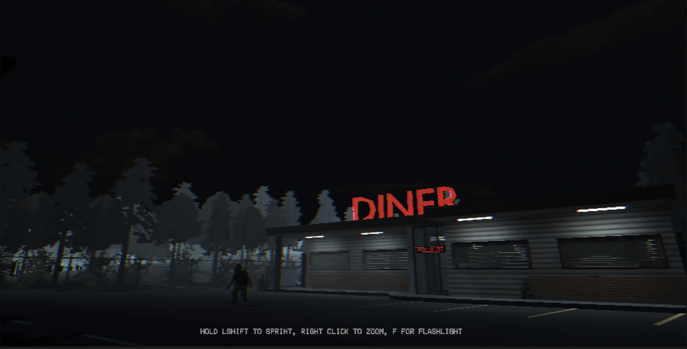

Night of Doom
Our Unity game is called Night of Doom. It features a deranged farmer with a sinister agenda, from whom the player must escape from. The user must utilize swift and stealthy movements to escape the farmer’s clutches in the dead of night. The user can shine their flashlight to illuminate the road, permitting them to gain distance from the enemy farmer. The goal of the game is to survive being captured by the farmer for as long as possible.
Click to download file
Our Unity game is called Night of Doom. It features a deranged farmer with a sinister agenda, from whom the player must escape from. The user must utilize swift and stealthy movements to escape the farmer’s clutches in the dead of night.
The user can shine their flashlight to illuminate the road, permitting them to gain distance from the enemy farmer. The goal of the game is to survive being captured by the farmer for as long as possible.

The enemy AI is not too complicated. It uses Unity Raycasting to check if the player object is within its field of view and then begins chasing the player. That’s the very basic level of the AI. On top of that, the AI patrols between set destinations and it randomly chooses the next one. This gives the sense that the AI is alive and is actively looking for the player. Also there are active states that the AI rests in For example, when the enemy is standing still at a destination and searching around, the AI is in the “Idle” state. The enemy is in the “Chasing” state when the player is spotted and the enemy is actively advancing towards the player. These states are functions in C# and each state comes with its own animations to show the player the behavior of the AI. The AI also comes with many customizable parameters to fine-tune the AI for how one decides how the game should be played.
Above is an example of some of the coroutines of the AI. When it is in the “Chasing” state, it chooses the “sprint” animation. Also when the enemy AI gets within the attacking range, it triggers the jumpscare animation which is shown in the if loop. In the future, we hope to add an audio system with ambient sounds and play certain spooky sounds when the enemy starts chasing or catching the player. We also hope to improve the AI system as it feels like an orbiting planet that flies right past the player if the player moves slightly to one side.
Resources:
(Enemy AI tutorial)
(Enemy Model and Animations)